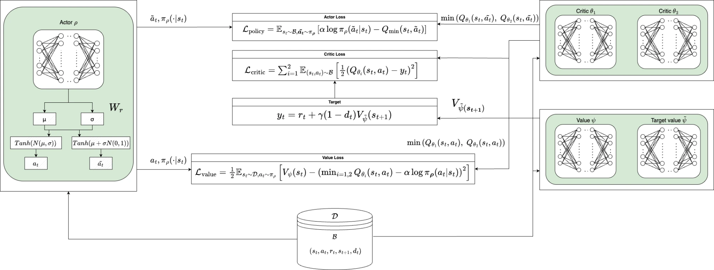
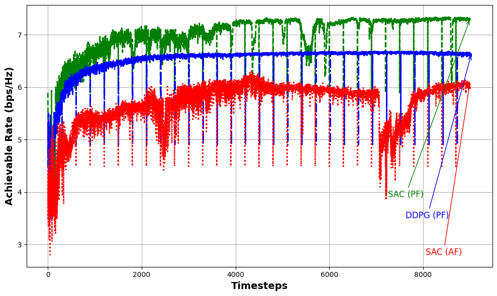

Precoding at the transmitter and phase shifts across multiple reconfigurable intelligent surfaces (RISs) must be jointly optimized to maximize rate — a non-convex, NP-hard problem. I designed a Markov decision process formulation and a Soft Actor-Critic (SAC) agent for it, with an episodic training strategy that starts every episode from the same fixed state rather than a random one, turning the optimization into something closer to a game the agent learns to win consistently.
Jointly optimizing the RIS phase-shift matrices Φ and precoding matrix F to maximize achievable rate is a challenging non-convex problem with a high-dimensional, continuous search space. Although a candidate solution can be evaluated in a single forward pass, finding a good solution requires navigating a complex optimization landscape. This work recasts the problem as sequential decision-making: rather than selecting the entire solution at once, a Soft Actor-Critic (SAC) agent applies bounded updates to the current solution, progressively refining it over an episode.
In several existing formulations, the state includes the fixed channel realization and the previous action, while the next state is determined solely by the newly applied action, independently of the current state. This makes successive decisions effectively independent of the current optimization variables. The proposed formulation instead defines the state through the current optimization variables and uses incremental actions to update them, allowing each decision to build on the solution reached in the preceding step.
Each bounded update starts from the current solution, producing a trajectory of successive refinements.
Absolute action selects the next candidate; the previous solution does not determine the transition.
Conceptual illustration only; the paths are not measured optimization trajectories.
Compared against this alternate formulation (AF) under otherwise identical SAC training, the proposed formulation (PF) improves the achievable rate by 15.5% — see Section 04.
At each step, SAC proposes an incremental change rather than an entirely new solution. The environment applies the update, enforces the RIS unit-modulus and precoding power constraints, and evaluates the resulting achievable rate. The updated optimization variables form the next state, while the rate improvement determines the reward.
C is the Shannon capacity of the effective channel Hₑ = Σᵢ HLᵢDΦᵢHSLᵢ + HSD under the current precoding F. Because the reward is a pure difference, the sum of rewards over an episode telescopes to 1000·(Cfinal − Cstart) — maximizing expected return is literally maximizing the rate gained.
A transmitter with antennas sends data streams to a receiver with antennas, precoded by F before transmission. The signal reaches the receiver two ways: directly, over the line-of-sight path, and indirectly, bounced once off each of independently placed, passive reconfigurable intelligent surfaces (RISs) sitting between them. Each RIS carries no amplifier and radiates no power of its own — it only reshapes the phase of whatever hits it — so every useful watt in the received signal still has to come from the transmitter's own precoding.
Every RIS has passive reflecting elements, and each element applies its own phase shift to the signal reflecting off it — together these form a diagonal phase-shift matrix Φi per surface, every element constrained to unit modulus, so it can only rotate the phase of what hits it, never amplify or attenuate it. At the receiver, the direct path and all three once-reflected paths add together into a single effective channel; choosing the Φi’s and F together to maximize that channel's achievable rate is exactly the non-convex problem.
Drag to rotate. Real positions — Tx (0,0,10), RISs at x=600/630/660 (y=2,z=10), Rx (620,0,0), all in metres — spacing compressed for legibility, not to linear scale. M = 10 reflecting elements per surface in this run. Channels are Rayleigh-faded with large-scale path loss β₀(d/d₀)−α, β₀ = −30 dBm at d₀ = 1 m, each link its own real exponent — α=2.2 Tx→RIS, α=2.8 RIS→Rx, α=3.5 direct Tx→Rx; receiver noise −90 dBm.
The objective is to choose all phase-shift matrices and the precoding matrix together to maximize achievable rate:
where Φi = phase-shift matrix of RIS i, F = precoding matrix, Hₑ = effective channel (direct + 3 reflected paths), σ² = noise power, Ptx = transmit power budget.
Every Φi is constrained to unit modulus on its diagonal, and F is constrained to the 40 dBm power budget — both non-convex on their own, and coupled together through the same channel, which is what makes the joint problem NP-hard.
The proposed MDP from Section 01 acts directly on these objects, on this exact system: the state is [Φ₁,Φ₂,Φ₃,F] flattened into one vector, the action a bounded delta to every element of it, the environment renormalizes each Φᵢ back onto the unit circle and rescales F back inside the power budget, and the reward is the resulting change in C — computed on exactly this real, seeded channel.
SAC optimizes a stochastic policy by maximizing expected return and policy entropy together, which keeps the agent exploring instead of collapsing onto the first decent configuration it finds. Twin critics reduce overestimation bias; a separate value network, updated by Polyak averaging, keeps the Bellman targets stable while the policy keeps changing underneath it.

The actual architecture diagram from the paper
Rather than one long episode of up to 10,000 steps, or a random reset each time, every episode here starts from the same fixed state. The agent effectively plays the same optimization "level" repeatedly, and the best state found across all its attempts for that channel is what gets returned — fewer total steps needed, and far more consistent convergence.
What's below is one complete, real run of the proposed SAC agent.
Starting rate 5.74 bps/Hz → converges to ~6.95 bps/Hz for this channel (≈21% gain) in roughly 12 episodes, then holds. Real rate log from the SAC agent, seed-fixed channel, 40 dBm power budget.
The best rate reached within each of the 30 episodes, computed directly from the step-level log above :
Max achievable rate per episode, this run. Compare with Fig. 1/5 in the paper, which average this same quantity over 250 independent channels.
The same comparison behind the headline numbers below, plotted directly: SAC under the proposed formulation (PF) pulls ahead of DDPG under the same formulation, and both comfortably outperform SAC trained under the alternate formulation (AF) — the absolute-action formulation from Section 01, whose next state doesn't build on the current solution.

Real training curves, same fixed-restart episodic strategy as the scrubbable run above. SAC(PF) converges fastest and highest; SAC(AF) — same algorithm, absolute-action state — visibly struggles by comparison.
Averaged over 250 independent channel realizations, as reported in the paper's evaluation (Figs. 1–5):
A Markov decision process formulated to keep the state truly self-contained, a Soft Actor-Critic agent trained with twin critics and an entropy-regularized policy, and an episodic strategy that always restarts from the same state rather than a random one — together these improve the achievable rate by 8% over classical alternating optimization and 4.53% over DDPG, averaged across 250 independent channel realizations, while generalizing across diverse channel conditions.